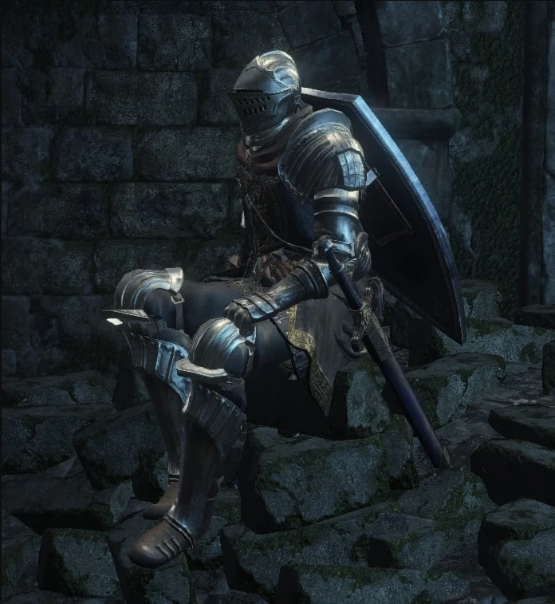
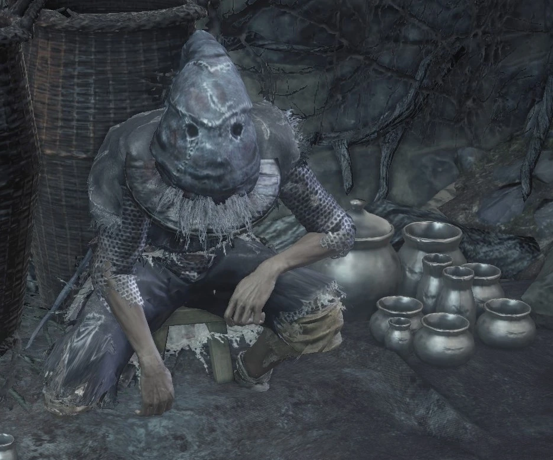
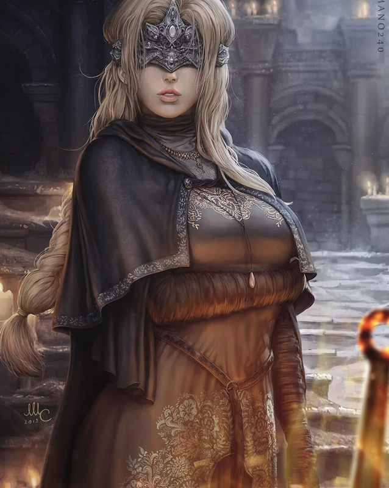

Personajes en Dark Souls 3
Motivaciones profundas y arcos narrativos significativos

Siegward de Catarina
Caballero honorable. Su historia trata sobre promesas de vida o muerte y lealtad inquebrantable.

Anri de Astora
Búsqueda de justicia y propósito frente a la maldición de los No Muertos. Un arco trágico y complejo.

Greirat de la Muralla
Ladrón en busca de redención. Su historia nos recuerda la fragilidad de la vida en un mundo que agoniza.

Guardiana de Fuego
Conexión absoluta con el destino del mundo. Eje fundamental del ciclo de la Primera Llama.
"Estos personajes ofrecen una profundidad narrativa que trasciende la mera interacción, algo inexistente en el loop de 'ponerla'."
6